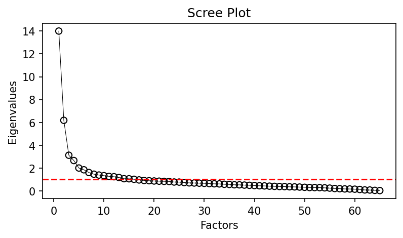
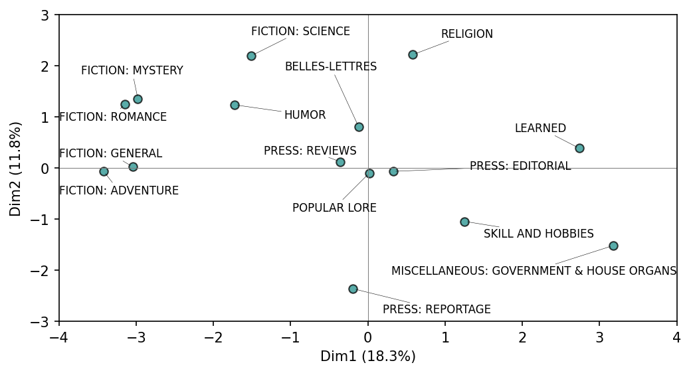
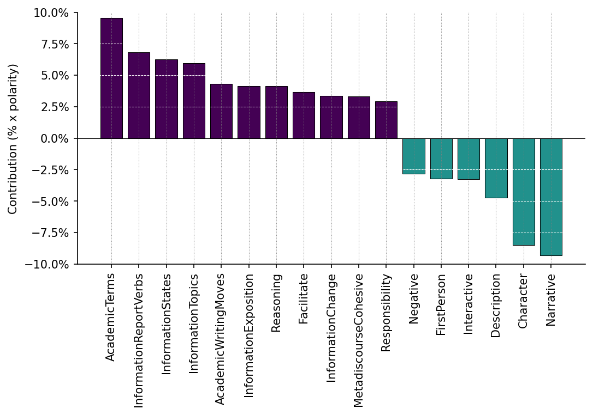

Imagine comparing 15 different genres of writing—news articles, academic papers, fiction, blog posts, legal documents. You might count individual features: passives, pronouns, nominalizations, hedges. But analyzing 50+ features across genres becomes overwhelming. Which features matter? How do they co-occur?
Multi-Dimensional Analysis (MDA) solves this by revealing how linguistic features bundle together to distinguish text types. Rather than examining features in isolation, MDA identifies dimensions of variation—underlying patterns that systematically differentiate registers, genres, or styles.
12.1.1 The Core Insight
MDA, developed by Douglas Biber in the 1980s, rests on a key observation: linguistic features don’t vary randomly. They co-occur in predictable patterns because they serve related communicative functions.
For example, involved production (conversation, personal letters) tends to have:
High rates of first/second-person pronouns (I, you)
Present tense verbs (is, seems, think)
Contractions (it’s, don’t)
Private verbs (feel, believe, want)
While informational production (academic writing, official documents) tends to have:
High rates of nouns and nominalizations (discussion, implementation)
Attributive adjectives (significant, relevant)
Prepositional phrases
Longer words
These features don’t just happen to co-occur—they cluster because they all support the same communicative goal (personal interaction vs. information density).
Why “Multi-Dimensional”?
Each dimension captures a distinct pattern of co-variation. A corpus might vary along:
Dimension 1: Involved vs. informational production
Dimension 2: Narrative vs. non-narrative discourse
Dimension 3: Situation-dependent vs. elaborated reference
Dimension 4: Overt expression of persuasion
Texts are scored on each dimension, creating a multi-dimensional profile. A personal blog might score high on D1 (involved) and low on D2 (non-narrative), while a historical novel scores high on D2 (narrative) but mid-range on D1.
12.1.2 Research Questions MDA Can Answer
Register variation: How do academic writing, journalism, and fiction differ linguistically?
Historical change: Has scientific writing become more impersonal over time?
Genre classification: Can we automatically distinguish mystery novels from romance based on linguistic profiles?
Cross-linguistic comparison: Do the same dimensions appear in English and Spanish?
Style attribution: Does Author A use more “narrative” features than Author B?
Why MDA Matters for Humanities Research
The single-feature trap: You might notice that academic writing uses more passives than fiction (e.g., was observed vs. she observed). But is this a meaningful pattern or just one isolated feature?
MDA reveals: Passives don’t vary randomly—they cluster with nominalizations, attributive adjectives, and longer words. This bundle indicates a deeper pattern: informational production where ideas are densely packaged and agency is de-emphasized.
Implication: Academic writing isn’t just “more passive.” It operates in a different communicative mode that requires specific linguistic resources (abstraction, nominalization, modification). Understanding this helps explain:
Why academic prose feels “dense” (multiple features create density together)
How genres constrain linguistic choices (you can’t write academically with only pronouns and present tense)
What features distinguish “academic” from “popular science” (dimensions reveal combinations, not just frequencies)
MDA shifts the question from “what features differ?” to “what communicative modes exist, and what features realize them?” This is computational reasoning at its best—using statistics to discover functional patterns.
12.2 Understanding the MDA Workflow
12.2.1 The Four Steps
1. Identify relevant variables
Select linguistic features that might vary systematically across texts. These typically come from tagged corpora (POS tags, dependency parses, semantic categories).
Example features:
Past tense verbs
Modal verbs (can, should, must)
Attributive adjectives
Type-token ratio
Average word length
2. Extract factors from variables
Use factor analysis to identify which variables co-occur. Variables that load on the same factor form a dimension.
Statistical process: Factor analysis finds latent variables (factors) that explain correlations among observed variables. If passives, nominalizations, and attributive adjectives consistently co-occur across texts, they’ll load on the same factor.
3. Functional interpretation of factors as dimensions
Examine high-loading features and assign a functional label based on linguistic theory and the communicative purposes those features serve.
Example interpretation: If a factor has high loadings for:
Personal pronouns (+)
Present tense (+)
Contractions (+)
Nominalizations (-)
Passives (-)
This suggests an “involved vs. informational” dimension—one pole emphasizes personal interaction, the other informational density.
4. Placement of categories on dimensions
Score each text on the extracted dimensions and plot text categories (genres, registers, time periods) to see how they cluster.
Example finding: Conversation and personal letters cluster at the “involved” pole, while academic prose and official documents cluster at the “informational” pole.
12.2.2 Why Factor Analysis?
Factor analysis is ideal for MDA because:
Reduces complexity: 67 features → 5 interpretable dimensions
Reveals co-occurrence patterns: Shows which features cluster together
Handles correlations: Features are often correlated—factor analysis accounts for this
Produces weights: Factor loadings show how strongly each feature contributes to a dimension
Statistical Requirements
Factor analysis requires:
Sufficient observations: Minimum 5-10 observations per variable (preferably 20+)
Continuous variables: Normalized frequencies work well
Moderate correlations: Variables should correlate but not be redundant
For a corpus with 67 features, you need at least 350-670 texts (ideally 1,000+).
12.3 The Biber Tagger Approach
Douglas Biber’s foundational MDA studies used 67 lexicogrammatical features derived from grammatical tagging and parsing. The pybiber package replicates this approach using spaCy.
12.3.1 Why Tagged Features?
In order to carry out MDA, we need at least 5 observations per variable (ideally 10-20). This generally precludes using simple word counts—with 500 documents and 10,000 unique words, you’d need 50,000-100,000 documents for stable factor analysis.
Instead, we use tagged features that aggregate linguistic patterns into functional categories:
We’ll analyze the Brown Corpus (500 texts across 15 genres):
# Load Brown Corpus with genre labelsbrown_corpus = pl.read_parquet("https://github.com/browndw/humanities_analytics/raw/refs/heads/main/data/data_tables/brown_corpus.parquet")# Select document IDs and textsbc = brown_corpus.select("doc_id", "text")bc.head(3)
shape: (3, 2)
doc_id
text
str
str
"A01"
"The Fulton County Grand Jury s…
"A02"
"Austin, Texas -- Committee app…
"A03"
"Several defendants in the Summ…
The Brown Corpus is the first computer-readable corpus of American English (1961), containing 500 text samples (~2,000 words each) across 15 genres:
Press: Reportage, Editorial, Reviews
Religion
Skill and Hobbies
Popular Lore
Belles-Lettres
Learned (academic/scientific writing)
Fiction: General, Mystery, Science Fiction, Adventure, Romance, Humor
This genre diversity makes the Brown Corpus ideal for MDA—we expect systematic linguistic differences across these registers.
# Load spaCy model (disable NER for speed)nlp = spacy.load("en_core_web_sm", disable=["ner"])# Parse corpus with spaCy (this takes ~30 seconds with n_process=4)df_spacy = pb.spacy_parse(corp=bc, nlp_model=nlp, n_process=4)
Performance: Corpus processing completed in 58.85s
The spacy_parse function processes each text through spaCy’s pipeline, extracting POS tags and dependency relationships needed for Biber feature identification. The n_process=4 argument uses 4 CPU cores in parallel for faster processing.
12.3.4 Aggregating Features
# Aggregate into 67 Biber feature categoriesdfm_biber = pb.biber(df_spacy)dfm_biber.head(5)
[INFO] Using MATTR for f_43_type_token (window=100)
[INFO] All features normalized per 1000 tokens except: f_43_type_token and f_44_mean_word_length
shape: (5, 68)
doc_id
f_01_past_tense
f_02_perfect_aspect
f_03_present_tense
f_04_place_adverbials
…
f_63_split_auxiliary
f_64_phrasal_coordination
f_65_clausal_coordination
f_66_neg_synthetic
f_67_neg_analytic
str
f64
f64
f64
f64
…
f64
f64
f64
f64
f64
"A01"
52.475248
5.445545
22.277228
0.0
…
1.485149
7.425743
4.950495
1.485149
4.455446
"A02"
36.39941
4.918839
20.659124
0.0
…
0.983768
3.935071
1.475652
0.491884
3.443187
"A03"
47.40958
4.398827
15.151515
0.488759
…
1.955034
9.775171
1.466276
1.466276
5.376344
"A04"
33.366045
17.1737
30.912659
2.453386
…
3.43474
6.86948
5.397448
2.944063
6.378803
"A05"
39.922103
6.815969
32.132425
1.94742
…
2.92113
3.894839
2.434275
1.94742
3.894839
The biber() function returns normalized frequencies (per 1,000 words) by default, making texts of different lengths comparable.
Example features:
f_01_past_tense: Count of past tense verb forms
f_02_perfect_aspect: Have/has + past participle
f_18_first_person_pronouns: I, me, my, we, us, our
f_42_nominalizations: Words ending in -tion, -ment, -ness, -ity
f_43_type_token: MATTR (moving-average type-token ratio) for lexical diversity
f_44_mean_word_length: Average word length in characters
12.3.5 Adding Metadata
# Add genre labels from original corpusdfm_biber = dfm_biber.join( brown_corpus.select("doc_id", "text_type"), on="doc_id")
The scree plot shows eigenvalues (variance explained) for each potential factor:
df.mdaviz_screeplot()

Decision criteria:
Elbow method: Look for the bend where slope flattens (around factor 3-4)
Kaiser criterion: Extract factors with eigenvalue > 1 (shown by red dashed line)
Interpretability: Can you meaningfully interpret each factor?
Typical range: 3-7 factors for most corpora
Our decision: Extract 3 factors based on clear elbow at 3 and interpretability. While eigenvalues suggest we could extract more, we prioritize parsimony (fewer, clearer dimensions) over explanatory power (more variance explained).
Balancing Parsimony vs. Power
Extracting too few factors = lose important variation patterns
Extracting too many factors = dimensions become uninterpretable
The goal is the smallest number of factors that still capture major register differences. 3-5 factors typically work well for genre/register studies.
12.4.3 Extract Factors
df.mda(n_factors=3)
INFO:pybiber.biber_analyzer:Dropping 2 variable(s) with max |r| <= 0.20: ['f_61_stranded_preposition', 'f_62_split_infinitive']
Note the information message: pybiber automatically drops variables with low correlations (max |r| <= 0.20) because they don’t contribute meaningfully to factor structure. In this case, stranded prepositions and split infinitives show minimal correlation with other features.
12.4.4 Examine Results
View summary statistics:
df.mda_summary
shape: (3, 6)
Factor
F
df
PR(>F)
Signif
R2
str
f64
list[i64]
f64
str
f64
"factor_1"
88.972607
[14, 455]
0.0
"*** p < 0.001"
0.73245
"factor_2"
19.846179
[14, 455]
0.0
"*** p < 0.001"
0.379133
"factor_3"
5.998623
[14, 455]
6.4466e-11
"*** p < 0.001"
0.155814
This shows:
Variance explained by each factor
Cumulative variance (total explained by all factors)
Eigenvalues (variance per factor)
Interpretation: If 3 factors explain 60% of variance, that’s good—most linguistic variation captured by few dimensions. The remaining 40% represents unique variation not explained by common patterns.
12.5 Interpreting Dimensions
12.5.1 Examine Factor Loadings
Factor loadings show how strongly each linguistic feature contributes to each dimension:
# Sort loadings for Factor 1 to see high positive/negative featuresdf.mda_loadings.sort("factor_1")
shape: (65, 4)
feature
factor_1
factor_2
factor_3
str
f64
f64
f64
"f_03_present_tense"
-1.009852
-0.034924
0.942609
"f_40_adj_attr"
-0.808102
0.150414
0.05509
"f_14_nominalizations"
-0.777371
0.147251
-0.079733
"f_44_mean_word_length"
-0.747481
-0.069632
-0.191333
"f_45_conjuncts"
-0.679174
0.29295
0.157756
"f_39_prepositions"
-0.600508
-0.070209
-0.272134
"f_64_phrasal_coordination"
-0.522747
-0.00872
0.125395
"f_17_agentless_passives"
-0.462271
-0.040817
-0.203729
"f_51_demonstratives"
-0.456285
0.279224
0.110075
"f_53_modal_necessity"
-0.42862
0.175607
0.269923
…
…
…
…
"f_56_verb_private"
0.524676
0.488517
-0.067488
"f_11_indefinite_pronouns"
0.525606
0.322819
0.142859
"f_05_time_adverbials"
0.545754
0.109797
-0.048566
"f_65_clausal_coordination"
0.578759
0.364878
0.098526
"f_02_perfect_aspect"
0.582999
0.331141
-0.237912
"f_59_contractions"
0.594221
0.017707
0.275919
"f_04_place_adverbials"
0.633699
-0.019547
-0.13196
"f_25_present_participle"
0.671088
0.02429
-0.203594
"f_08_third_person_pronouns"
0.928793
0.235852
-0.277713
"f_01_past_tense"
1.229951
0.220792
-0.698066
Reading loadings:
High positive (+0.7 to +1.0): Feature strongly present at positive pole of dimension
High negative (-0.7 to -1.0): Feature strongly present at negative pole of dimension
Low (close to 0): Feature doesn’t contribute meaningfully to this dimension
Example interpretation:
If Factor 1 shows:
f_18_first_person_pronouns: +0.85
f_03_present_tense: +0.78
f_27_contractions: +0.72
f_42_nominalizations: -0.80
f_35_by_passives: -0.75
f_19_attributive_adjectives: -0.70
Functional label: Involved vs. Informational Production
Rationale:
Positive pole (+): Features of interaction and immediacy
First-person pronouns signal personal involvement (I think, we believe)
Present tense creates immediacy (is, happens)
Contractions mark informal, conversational style (it’s, don’t)
Negative pole (-): Features of informational density
Nominalizations pack meaning into noun phrases (the implementation of the policy)
Passives deemphasize agency and create objectivity (was observed)
Interpretation: Different taggers reveal different aspects of variation
Methodological insight: If dimensions align across taggers, it suggests robust register variation—the patterns aren’t artifacts of one classification system. If they diverge, each tagger offers unique insights.
Comparative Research
Dejonge & Biber (2021) compared MDA using Biber features vs. DocuScope tags:
Conclusion: Different taggers complement rather than replace each other
Studies in Corpus Linguistics, 109, 51-76.
12.7 Principal Component Analysis (PCA)
PCA is a related dimension reduction technique, more common in machine learning and outside corpus linguistics.
12.7.1 MDA vs. PCA: Theoretical Differences
Aspect
MDA (Factor Analysis)
PCA
Goal
Find latent factors causing observed variation
Find variance-maximizing components
Variance
Shared variance among variables
Total variance (including unique variance)
Assumptions
Latent factors cause observations
No causal assumptions
Interpretation
Factors have functional meanings
Components are mathematical constructs
Rotation
Varimax/promax rotation for interpretability
No rotation (or optional)
Use case
Interpretive analysis (register, style)
Predictive modeling, data compression
For text analysis:
MDA preferred for interpretable dimensions (e.g., “involved vs. informational” has linguistic meaning)
PCA preferred for data compression or predictive features (feeding into classification models)
Key difference: MDA assumes latent factors (like “involved production”) cause observed linguistic patterns (pronouns, present tense, contractions co-occur because they all serve involvement). PCA just identifies variance patterns without causal claims.
# Plot group means across PC1 and PC2df_ds.pcaviz_groupmeans()

Interpretation:
PC1 (x-axis): First principal component (captures most variance)
PC2 (y-axis): Second principal component (captures second-most variance)
Percentages: Variance explained by each component (e.g., 18.3%, 11.8%)
Genre clustering: Fiction genres (romance, mystery, adventure) cluster together on the left, while learned/government genres cluster on the right. This suggests PC1 captures a narrative vs. informational dimension similar to MDA Factor 1.
PC2 separates religious texts (top) from government documents (bottom), possibly capturing a personal vs. impersonal or persuasive vs. procedural dimension.
# Show variable contributions to PC1df_ds.pcaviz_contrib(pc=1)

Interpretation: Variables (DocuScope categories) with contributions above the mean threshold (red dashed line) are important for that component.
Extracting 10 factors from 500 texts produces unstable, uninterpretable dimensions. Stick to 3-7 for most corpora.
Why it fails: Too many factors = overfitting noise rather than capturing meaningful patterns.
2. Forcing interpretations
Not every factor has a clear functional interpretation. If you can’t meaningfully label it after examining loadings and exemplar texts, consider reducing the number of factors.
Warning sign: Labels like “Factor 3” or vague descriptions (“miscellaneous linguistic features”).
3. Ignoring negative loadings
Dimensions are bipolar—both positive and negative poles matter. A factor isn’t just “high nominalizations,” it’s “nominalizations vs. pronouns” (informational vs. involved).
Fix: Always report and interpret high loadings on both poles.
4. Cherry-picking features
Report all high-loading features (typically |loading| > 0.40 or 0.50), not just the ones that fit your hypothesis.
Transparency: Readers should see the full factor structure, including inconvenient features that complicate interpretation.
5. Confusing correlation with causation
MDA shows co-occurrence patterns, not causal relationships. “Passives correlate with nominalizations” ≠ “Passives cause nominalizations.”
Correct framing: “Passives and nominalizations co-occur because they both serve informational density.”
6. Assuming universality
Dimensions vary across corpora, languages, and time periods. Biber’s Dimension 1 might not emerge in your corpus—that’s a finding, not a failure.
Example: A corpus of 19th-century sermons might not show involved/informational variation (all texts are rhetorically involved), but might reveal a “doctrinal vs. testimonial” dimension unique to that genre.
7. Neglecting corpus representativeness
Garbage in, garbage out. If your “fiction” category is all Stephen King novels, dimensions won’t generalize to all fiction.
Best practice: Ensure balanced sampling across subcategories (multiple authors, publishers, time periods).
12.10 What to Do After MDA
12.10.1 Connect to Linguistic Theory
Do extracted dimensions align with known register theory? (Biber’s dimensions, Halliday’s functional grammar)
Do they challenge existing assumptions about genre boundaries?
What new distinctions emerge that previous research missed?
Example: If a “confident vs. hedged” dimension emerges in scientific writing, does it align with sociology of science literature on epistemic modality?
12.10.2 Validate with Close Reading
Identify exemplar texts: Find texts scoring high/low on each dimension
Read them: Does the dimension label fit? What nuances are missed by statistical patterns?
Refine interpretations: Adjust labels based on actual linguistic content
Example: Factor 2 loads high on past tense, third-person pronouns, and public verbs. You label it “narrative,” but reading high-scoring texts reveals they’re historical exposition, not storytelling. Refine label to “historical recount.”
12.10.3 Compare Across Corpora
Apply the same MDA to a different corpus (different language, time period, domain)
Do similar dimensions emerge? (suggests language-general patterns)
What’s corpus-specific vs. universal?
Example: Run MDA on 18th-century and 21st-century academic writing. Does “involved vs. informational” still distinguish genres, or has academic writing become more conversational over time?
12.10.4 Use for Classification
Train supervised models using dimension scores as features
Predict genre membership for new texts
Test how well dimensions discriminate categories (ANOVA, discriminant analysis)
Example: Use 3 MDA dimensions to train a logistic regression model classifying texts as “fiction” vs. “non-fiction.” If accuracy > 85%, dimensions are robust genre markers.
12.10.5 Track Diachronic Change
Run MDA on texts from different decades or centuries
Do dimension scores shift over time? (e.g., is scientific writing becoming less formal?)
Are certain registers becoming more/less distinct?
Example: Apply MDA to New York Times articles from 1920, 1970, and 2020. Does Factor 1 (involved vs. informational) show journalism becoming more conversational?
12.11 Conclusion
MDA is a powerful method for discovering and describing systematic linguistic variation. It transforms messy, correlated feature counts into interpretable dimensions that capture communicative functions.
Strengths:
Reduces complexity: 67 features → 3-5 interpretable dimensions
Reveals co-occurrence patterns: Shows which features cluster together and why
Produces functional interpretations: Dimensions have linguistic meaning (“involved production,” not “PC1”)
Enables comparisons: Across registers, languages, time periods, authors
Limitations:
Requires large corpora: Minimum 300-500 texts for stable factors
Subjective interpretation: Different researchers might label factors differently
Statistical patterns ≠ explanations: Co-occurrence doesn’t explain why features cluster (need linguistic theory)
Linguistic knowledge: Functional interpretation grounded in register theory (Biber, Halliday)
Qualitative validation: Close reading of exemplar texts to refine interpretations
Transparency: Report all factors, all loadings, all decisions (don’t cherry-pick)
Triangulation: Combine MDA with other methods (keyness, topic modeling, close reading)
The best MDA workflows combine computational scale (analyzing hundreds of texts) + statistical rigor (proper factor analysis) + interpretive depth (functional linguistic interpretation) + methodological transparency (reporting everything).
Connecting to Mini Lab 10
Mini Lab 10: Multi-Dimensional Analysis provides hands-on practice with the complete MDA workflow using both Biber and DocuScope features on the Brown Corpus. You’ll extract factors, interpret dimensions, visualize genre differences, and compare MDA to PCA.
Discussion questions in the mini lab ask you to:
Interpret factor loadings functionally (what do high +/- features reveal?)
Compare Biber vs. DocuScope dimensions (which better distinguishes genres?)
Analyze genre clustering patterns (do “learned” vs. “popular” separate as predicted?)
Assess stability across taggers (do similar dimensions emerge?)
Compare MDA vs. PCA (which is more interpretable for humanities research?)
12.12 See Also
Foundational Work:
Biber, D. (1988). Variation across Speech and Writing. Cambridge University Press.
Biber, D. (1995). Dimensions of Register Variation: A Cross-Linguistic Comparison. Cambridge University Press.
Biber, D. (1992). The multi-dimensional approach to linguistic analyses of genre variation: An overview of methodology and findings. Computers and the Humanities, 26(5-6), 331-345.
spaCy Basics: NLP processing pipeline for linguistic annotation
Related Mini Labs:
Mini Lab 3: Frequency distributions (building blocks for MDA)
Mini Lab 4: Keyness (comparing genres without factor analysis)
Mini Lab 8: spaCy processing (how Biber features are extracted)
Methodological Comparisons:
Friginal, E., & Hardy, J. A. (Eds.). (2013). Corpus Linguistics in Context. Routledge. (Chapters on MDA vs. other methods)
Dejonge, S., & Biber, D. (2021). Multidimensional analysis of DocuScope tags. Studies in Corpus Linguistics, 109, 51-76.
12.13 Works Cited
Biber, D. (1988). Variation across Speech and Writing. Cambridge University Press.
Biber, D. (1992). The multi-dimensional approach to linguistic analyses of genre variation: An overview of methodology and findings. Computers and the Humanities, 26(5-6), 331-345.
Dejonge, S., & Biber, D. (2021). Multidimensional analysis of DocuScope tags. Studies in Corpus Linguistics, 109, 51-76.